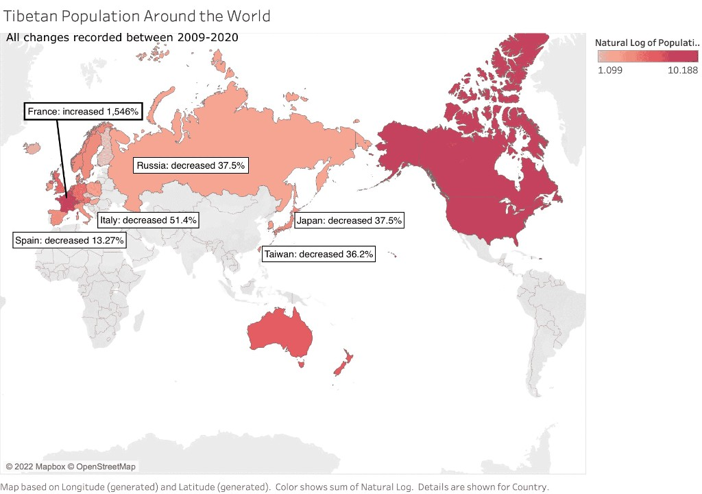

[1] Introduction: Minorities Across Borders, Not Just Within States
The 1992 Declaration on the Rights of Persons Belonging to National or Ethnic, Religious and Linguistic Minorities presupposes a state that can “protect the existence and the national or ethnic, cultural, religious aand linguistic identity of minorities within their respective territories” (art. 1). Yet a growing class of minorities live outside their historical territory, in diasporic and often stateless conditions, while continuing to organize politically and culturally around shared identity.
The Tibetan diaspora offers a paradigmatic case: a dispersed population spanning more than 40 countries, represented by exile institutions such as the Central Tibetan Administration (CTA). These institutions attempt to provide forms of self‑governance, cultural preservation, and political representation without the usual attributes of statehood (territorial control, unified civil registries, centralized identity systems).

This submission argues that:
- Diaspora and stateless minorities face structural barriers to exercising the rights recognized in the Declaration, especially in relation to political participation, equal access to documentation, and transparent governance.
- The design of exile governance systems, especially electoral and documentation practices, can either mitigate or exacerbate these barriers.
- UN mechanisms and Member States can support minority self‑governance by incentivizing better documentation policies, inclusive electoral infrastructures, and secure, accessible digital tools.
The analysis draws on the recent experience of Tibetan exile elections and broader diasporic participation mechanisms as an empirical lens. While specific examples are Tibetan, the recommendations are framed to apply to other dispersed minorities (e.g., Rohingya, Uyghur, Kurdish, and other communities with transnational or stateless characteristics).
[2] Key Challenges for Stateless and Diaspora Minorities
2.1 Political participation without a state
Article 2(2) of the Declaration affirms the right of minorities to participate effectively in “cultural, religious, social, economic and public life.” For stateless or exiled minorities, meaningful participation often occurs through non‑state institutions, parliaments‑in‑exile, community councils, or transnational associations.
However, such structures face distinct constraints:
- Territorial dispersion: Voters are spread across dozens of countries with different legal regimes, making uniform procedures difficult.
- Lack of recognized citizenship: Many community members hold host country documents (or lack clear legal status) while using parallel identity documents issued by exile authorities or community organizations.
- Resource asymmetry: Communities in wealthier host countries have greater capacity to engage with institutional processes (e.g., online systems, in‑person meetings) than those in poorer or more restrictive environments.
In this context, the right to “participate effectively in decisions on the national and, where appropriate, regional level” (art. 2(3)) depends heavily on how exile governance systems are designed.
2.2 Documentation and de facto disenfranchisement
Documentation, who is recognized as a community member and on what basis, is a central axis of exclusion or inclusion:
- Refugee documentation gaps: Individuals lacking formal refugee papers, or who have irregular migration status, may hesitate to register with exile institutions or may be unable to satisfy documentary requirements.
- Generation gaps: Second‑ and third‑generation diaspora members may hold only host‑country documents, making it harder for them to prove their connection to the minority community when the criteria are not transparent.
- Geographic bias: Communities in regions with strong organizational presence enjoy smoother registration and verification, while those in remote or politically constrained locations face higher friction.
The right to equal protection of the law, and to enjoy minority rights “without discrimination” (art. 4(1)), is jeopardized when documentation systems are opaque, geographically uneven, or overly burdensome.
2.3 Digital divides and transparency
As exile communities modernize their governance, they increasingly rely on digital infrastructure (web portals, social media, basic e‑governance tools) for:
- Voter education and candidate information
- Registration and verification
- Dissemination of results and decisions
Yet:
- Older adults, rural refugees, and low‑bandwidth regions can be effectively excluded if systems are not designed with accessibility and offline redundancy.
- If verification standards and procedures are not clearly published, trust can erode and rumors of manipulation can spread.
- Without proactive design, women, youth, and marginalized sub‑groups within the minority may be underrepresented as candidates and as participants.
Thus, the way digital tools are introduced has a direct effect on the realization of minority rights in practice.
[3] Lessons from Tibetan Diaspora Electoral Practice
The Tibetan case provides a concrete example of both vulnerability and progress in exile governance.
3.1 Elections as infrastructure, not only symbolism
Elections to the Sikyong (political leader) and the Tibetan Parliament in Exile are often portrayed symbolically as demonstrations of democratic commitment. Yet, operationally, they function as critical infrastructure for realizing rights:
- They determine who speaks for the community in international advocacy.
- They shape resource distribution (e.g., education, cultural programs, support to settlements).
- They serve as a focal point for inter‑generational engagement with Tibetan identity and politics.
Treatment of elections as purely symbolic can obscure operational shortcomings that systematically disadvantage certain segments of the diaspora.
3.2 Structural barriers in practice
Analysis of recent Tibetan electoral cycles reveals several structural weaknesses with broader relevance:
Geographic and resource‑based candidate barriers
- Potential candidates outside major hubs (e.g., Dharamsala, certain Western cities) face higher logistical and financial burdens to campaign, travel, and reach voters.
- This advantages candidates with existing institutional connections or diaspora wealth, skewing representation.
Documentation‑linked participation gaps
- Refugees or migrants with incomplete documentation may encounter de facto disenfranchisement: uncertain eligibility, inconsistent local practices for verification, or fear of interacting with quasi‑official structures.
- Youth born in Western countries may identify strongly as Tibetan but be unsure how to register or whether they qualify.
Delayed and fragmented information
- In past cycles, voters often relied on fragmented media reporting and delayed official communication to understand candidate positions, procedures, and results.
- This reduces informed participation and can empower informal gatekeepers over public, standardized information.
Limited accessibility by default
- Election materials and procedures have not always been designed for multilingual, low‑literacy, older, or low‑bandwidth users.
- Disability accessibility (visual, motor, cognitive) is often treated as an afterthought, rather than a design baseline.
These issues illuminate how organizational design choices directly affect the effective exercise of the rights set out in the Declaration, even in an institution that is sincerely committed to democracy.
3.3 Emerging improvements: public information and phased digitization
More recent cycles have introduced concrete improvements, many of which can be considered good practices:
- Centralized, public information portals compiling:
- Candidate profiles
- Key dates and procedures
- Clarified eligibility and documentation requirements
- Phased digital tools, used in addition to, not instead of, existing paper‑based mechanisms, to:
- Disseminate consistent information across over 40 countries
- Reduce the influence of rumor and local gatekeeping
- Media partnerships to broaden reach across different age and language groups.
These steps show that relatively low‑cost, design‑focused interventions can meaningfully expand access to information, improve transparency, and strengthen trust.
[4] Implications for the Implementation of the Declaration
The Tibetan experience highlights three cross‑cutting themes that are applicable to other national, ethnic, religious, and linguistic minorities in exile or diaspora.
4.1 Minority rights depend on institutional design, not only state goodwill
Even in contexts where host states allow considerable latitude for minority self‑organization, internal institutional design determines:
- Whose voices are heard
- How resources are allocated
- Which identities are recognized and validated
Thus, implementing the Declaration requires attention not only to state behavior, but also to the governance practices of minority institutions themselves, especially when they function as de facto authorities for stateless communities.
4.2 Documentation and identity as sites of structural exclusion
The Declaration emphasizes protection of identity and non‑discrimination. Yet in practice:
- Documentation policies (who is registered, how, and on what proof) shape access to education, representation, and sometimes humanitarian support.
- Criteria and procedures that are unclear, inconsistent, or overly rigid risk entrenching intra‑community inequality between well‑documented and poorly documented members.
This suggests a need for guidance and standards on minority documentation practices that balance:
- Flexibility for diverse diaspora contexts, with
- Clear principles of non‑discrimination, transparency, and appeal.
4.3 Digital governance as a new frontier of minority rights
Digital tools are rapidly becoming the primary medium through which minorities exercise their rights to:
- Access information
- Participate in cultural and political life
- Maintain transnational networks
Yet there is currently limited guidance specific to minority contexts on:
- Accessibility standards appropriate for low‑resource and multilingual communities
- Security and privacy baselines when dealing with politically vulnerable populations
- Auditability and transparency in digital electoral or consultation processes
The absence of such guidance risks reproducing or amplifying existing inequalities under the guise of modernization.
[5] Recommendations
Building on the above, I offer the following recommendations addressed to:
- Member States
- OHCHR and UN human rights mechanisms
- Minority representative institutions, especially in diaspora or stateless conditions
5.1 For Member States
Recognize and support diaspora governance as part of minority rights protection
- Explicitly acknowledge, in national reports and dialogues, the role of exile parliaments, councils, and associations where relevant.
- Facilitate their activities (meetings, voter registration, cultural events) within host country law, recognizing their contribution to the realization of rights in arts. 1 and 2 of the Declaration.
Ensure documentation policies do not penalize participation in minority institutions
- Clarify that engagement with exile or diaspora institutions (elections, registration) does not negatively affect asylum, immigration, or citizenship status.
- Where possible, coordinate information campaigns so that minority members understand that participation is safe and protected.
Support digital inclusion for vulnerable minority communities
- Fund or co‑fund connectivity, devices, and training for minority organizations to implement accessible, multilingual digital platforms.
- Encourage the adoption of open‑source, auditable tools where feasible, to enhance transparency and trust.
5.2 For OHCHR and UN mechanisms
Develop guidance on minority documentation and registration practices
- In consultation with minority communities (including stateless and diaspora groups), issue non‑binding guidelines on inclusive documentation:
- Clear, published eligibility criteria
- Proportional evidentiary requirements
- Appeals and review mechanisms
- Special accommodations for refugees and undocumented persons
- Encourage reporting on such practices in Universal Periodic Review and treaty‑body processes.
Highlight diaspora and stateless minorities in the Secretary‑General’s report
- Dedicate a section to diaspora governance and stateless minorities, using the Tibetan case and comparable examples to illustrate both challenges and good practices.
- Emphasize that the Declaration’s implementation must account for transnational and extraterritorial realities, not only minorities “within” a state’s territory.
Support norms and capacity‑building on digital electoral and consultative tools
- Develop or endorse minimum standards for:
- Accessibility (multilingual, low‑bandwidth, disability‑inclusive)
- Security and privacy (encryption basics, data minimization, threat modeling for at‑risk communities)
- Transparency (public documentation of procedures, publication of aggregate participation data)
- Offer training and technical assistance to minority institutions piloting such tools.
5.3 For Minority Institutions (Illustrated by Tibetan Exile Governance)
Treat elections and consultations as core human rights infrastructure
- Conduct systematic, post‑election evaluations that quantify:
- Turnout by region and demographic group
- Documentation‑related exclusion (e.g., percentage of rejected registrations and reasons)
- Accessibility performance (user surveys, usability testing)
- Publicly report findings and planned improvements.
Adopt “accessibility by default” in digital and procedural design
- Design portals and materials for:
- Low literacy and multiple languages
- Older users and persons with disabilities
- Low‑bandwidth and mobile‑only access
- Pair digital tools with offline alternatives (phone hotlines, printed guides, community liaisons) to avoid excluding those without internet access.
Clarify and publish verification standards and documentation criteria
- Make eligibility rules and acceptable documentation types publicly available in simple language.
- Establish standard operating procedures for local committees to minimize arbitrary variation across countries or settlements.
- Provide appeal and review channels for individuals who believe they were wrongly excluded.
Develop formal threat models and security baselines
- Identify specific risks (e.g., surveillance by adversarial states, data misuse, misinformation).
- Implement baseline protections such as:
- End‑to‑end encryption for sensitive communications
- Role‑based access control to voter data
- Logging and audit trails for key decisions
- Regularly review these protections with independent experts where possible.
[6] Conclusion
The rights affirmed in the Declaration on the Rights of Persons Belonging to National or Ethnic, Religious and Linguistic Minorities are increasingly exercised in transnational, digital, and often stateless contexts. The Tibetan diaspora demonstrates that:
- Institutional design, especially around documentation, participation, and digital infrastructure, is now a primary determinant of whether minority rights are realized or frustrated.
- Low‑cost, design‑conscious reforms (centralized public information, clarified verification standards, accessibility‑first digital tools) can meaningfully expand participation and trust, even without statehood or large budgets.
- UN mechanisms and Member States can play a constructive role by recognizing diaspora governance, supporting inclusive documentation practices, and promoting secure, accessible digital standards.
Recognizing these dynamics in the 2026 report would help move the conversation from viewing minority rights solely through the lens of territorial state-minority relations, toward a more accurate understanding of diaspora and stateless minorities as central actors whose internal governance practices are integral to the realization of the Declaration.